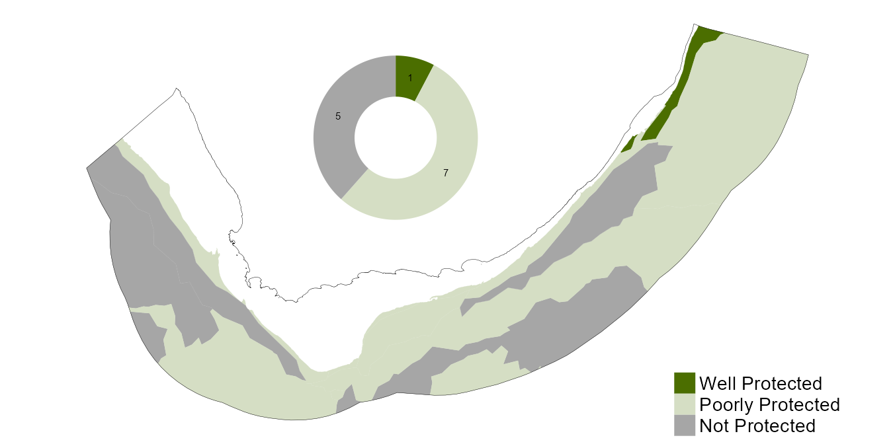
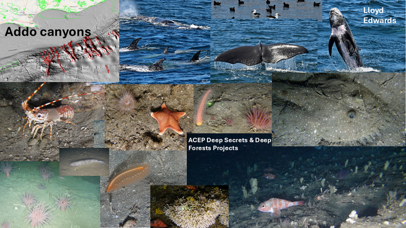

![]()
Progress has been made in evaluating the ecological, socio-economic and governance effectiveness of South Africa’s Marine Protected Areas (MPAs). Advances in ecological effectiveness are evident but there are gaps in participation, ecosystem representation, connectivity and governance. Increasing extent of protection alone is not enough to advance marine ecosystems to Well Protected, as the condition of marine ecosystems in conservation areas also needs to be improved. Diversified conservation measures can help address gaps and provide new opportunities to safeguard both biodiversity and cultural heritage. South Africa needs to better include people in the design, implementation and co-management of conservation areas.

20%
of 163 ecosystem types
Well Protected
of 163 ecosystem types
Well Protected
34%
of 163 ecosystem types
Poorly Protected
of 163 ecosystem types
Poorly Protected
29%
of 163 ecosystem types
Moderately Protected
of 163 ecosystem types
Moderately Protected
17%
of 163 ecosystem types
Not Protected
of 163 ecosystem types
Not Protected

Ecosystem protection level results
Of South Africa’s 163 national marine ecosystem types, 83% (representing 53.9% of the mainland marine area) are represented in the Marine Protected Area (MPA) network to some degree, leaving 27 ecosystem types (17%) as Not Protected (representing 46.1% of the mainland marine area). While the majority of ecosystems have some protection, only 32 ecosystem types (20%), representing 1.4% of the mainland marine area, are Well Protected. It should be noted that changes in relation to the previous assessment1 do not reflect genuine changes in ecosystem protection level, but are due to revised targets and methods to improve alignment globally and among realms in South Africa. A table of the ecosystem protection level and threat status results can be downloaded from the Data section below.
South Africa advanced protection levels in 2019 with the proclamation of the Phakisa MPA network. Of the 83 ecosystem types that were Not Protected before 2019, 67 types received their first protection in 2019 with the proclamation of 20 new or expanded MPAs2. These included 7 of 13 pelagic ecosystem types. Additionally, 18 ecosystem types advanced to Well Protected in 2019, going from a total of 9% to 20%. Since 2019, no new Marine Protected Areas have been established. However, protection for African penguin foraging areas has been strengthened through fishing closures around six breeding colonies3. In addition, new work is underway to support the recognition of Other Effective area-based Conservation Measures (OECMs), which may help diversify protection models3.
| Well Protected | Moderately Protected | Poorly Protected | Not Protected | ||
|---|---|---|---|---|---|
| Abyssal plains | Count | 0 | 0 | 3 | 2 |
| Extent (km2) | 0 | 0 | 187 869 | 214 459 | |
| Bays | Count | 0 | 1 | 3 | 1 |
| Extent (km2) | 0 | 1 631 | 2 755 | 981 | |
| Boulder/cobble shores | Count | 1 | 2 | 0 | 0 |
| Extent (km2) | 0 | 4 | 0 | 0 | |
| Canyons | Count | 3 | 3 | 1 | 2 |
| Extent (km2) | 303 | 2 563 | 2 395 | 3 256 | |
| Deepwater biogenic beds | Count | 0 | 1 | 0 | 0 |
| Extent (km2) | 0 | 104 | 0 | 0 | |
| Kelp forests | Count | 0 | 0 | 3 | 0 |
| Extent (km2) | 0 | 0 | 29 | 0 | |
| Muddy shelves | Count | 0 | 6 | 4 | 4 |
| Extent (km2) | 0 | 2 979 | 15 587 | 20 180 | |
| Pelagic ocean waters | Count | 1 | 0 | 7 | 5 |
| Extent (km2) | 14 407 | 0 | 525 397 | 302 141 | |
| Photic coral reefs | Count | 3 | 0 | 0 | 0 |
| Extent (km2) | 26 | 0 | 0 | 0 | |
| Photic rocky reefs | Count | 1 | 5 | 4 | 0 |
| Extent (km2) | 18 | 2 209 | 1 252 | 0 | |
| Plateaus | Count | 0 | 2 | 0 | 0 |
| Extent (km2) | 0 | 14 062 | 0 | 0 | |
| Rocky shelves | Count | 6 | 12 | 8 | 5 |
| Extent (km2) | 4 964 | 18 434 | 35 790 | 25 143 | |
| Rocky shores | Count | 4 | 7 | 10 | 1 |
| Extent (km2) | 67 | 194 | 356 | 1 | |
| Sandy shelves | Count | 6 | 4 | 8 | 2 |
| Extent (km2) | 2 982 | 3 306 | 76 033 | 12 370 | |
| Sandy shores | Count | 4 | 4 | 3 | 1 |
| Extent (km2) | 121 | 208 | 44 | 1 | |
| Seamounts | Count | 3 | 0 | 0 | 1 |
| Extent (km2) | 4 537 | 0 | 0 | 1 614 | |
| Slopes | Count | 0 | 1 | 2 | 3 |
| Extent (km2) | 0 | 17 527 | 93 513 | 302 541 | |
Ecosystem types on the KwaZulu-Natal shelf generally have higher protection levels while ecosystem types in the Southern Benguela are the least protected (Figure 1 and Figure 2). Offshore ecosystem types are still less represented in South Africa’s MPA network than shore and shelf ecosystem types. Slopes, abyssal plains, muddy and rocky shelves are the most poorly protected ecosystem functional groups (Figure 3). Unless these functional groups are targeted for inclusion in MPAs or OECMs, gaps in representation will persist. However, while protection in the deep ocean beyond the shelf edge is less than on continental shelves and coastal areas, it should be noted that the deep benthic and pelagic ecosystems are also less threatened.
Increasing extent of protection alone will not advance marine ecosystems to Well Protected. The condition of marine ecosystems in MPAs needs improvement through collaborative efforts that more effectively address existing pressures. Furthermore, new activities that may conflict with MPA objectives should undergo thorough assessment and only proceed if they are clearly demonstrated to be compatible with conservation goals. Strengthened ecosystem management in protected areas can provide an opportunity to improve the protection level of some of the Poorly or Moderately Protected ecosystem types to Well Protected.
Ecosystem types that are Not Protected include the Kingklip Koppies, the vast Southeast Atlantic Lower Slope, the expansive Southwest Indian Lower Slope and four pelagic ecosystem types. Among the latter, the Agulhas Retroflection and Southern Ocean Transitional Water is of particular interest as a globally unique area. The uThukela Canyon, the Cape Lower Canyon and St Helena Bay are also Not Protected.
Of the 27 Poorly Protected ecosystem types, several fall into this category because their areas that are within MPAs have high levels of ecosystem modification (i.e. poor ecological condition due to high past or ongoing pressures), not because they have very limited areas within MPAs. Among others, these include two kelp ecosystem types, Agulhas and Cape Kelp Forests, and two bay ecosystem types, Cape Bay and False and Walker Bay. Other ecosystem types that could advance from their current Poorly Protected status to Moderately Protected by improving ecological condition include Agulhas Mid Shelf Reef, the Agulhas Coarse Sediment Shelf Edge and Amathole Lace Corals.
Forty-eight marine ecosystem types are Moderately Protected. While several of these could advance to Well Protected through improved ecological condition, 27 types will require increased coverage in MPAs or OECMs. For example, Agulhas Boulder Shore, Agulhas Rocky Plateau and Agulhas Upper Canyon require increased representation in South Africa’s marine conservation estate to improve their ecosystem protection level.

Only 20% of South Africa’s 163 marine ecosystem types are Well Protected. This statistic could be increased through increasing the estate of representative protected areas and by reducing pressures and thereby improving ecological condition within some existing MPAs. Well Protected ecosystem types include many from the Delagoa ecoregion where the iSimangaliso MPA and World Heritage Site provides protection to many ecosystem types. Other examples of Well Protected types include Agulhas Inner Shelf Reef, Natal Exposed Rocky Shore and seamount ecosystem types in the South east Atlantic.
Marine protected and conserved areas
MPAs
In 2018, South Africa had 25 coastal MPAs covering less than 0.6% (6 260 km2) of the ocean around South Africa, up from 0.4% (4 711 km2) in 2011. The MPA estate increased significantly in 2019 and covers 5.4% (51 477 km2) of the ocean around South Africa. A map of the 42 MPAs in South Africa is shown in Figure 4, noting that the Prince Edward Islands MPA in South Africa’s subantarctic territory is the biggest of the South African MPAs and lies more than 1 700 km south of Gqeberha. No further progress in MPA establishment has been made since 2019. Learn more about South Africa’s MPAs at the Marine Protected Areas website.
MPA effectiveness
South Africa has made progress in evaluating the ecological, socio-economic and governance effectiveness of its MPAs4–6. These studies reveal gaps in participation, ecosystem representation, connectivity, cultural heritage protection and governance, among other attributes, which limit the ecological gains and effectiveness of the MPA network.
Common elements in these evaluations indicate a need to revisit MPA objectives for many MPAs declared before 2019, advance efforts to address historical injustices, strengthen social inclusion and collaboration in the design, implementation and management of protected areas and increase socio-economic research. Innovative transdisciplinary strategies in the co-design of protected and conserved areas and transparent and fair trade-offs in planning are needed7. This will ensure equitable governance and increased tangible benefits for rights holders, knowledge holders and people affected by protected areas4. Closer co-operation with fisheries, heritage and tourism could also deliver more integrated and effective protection7.
Alsion box with Tsitsikamma picture
OECMs
The concept of OECMs offers new opportunities for more inclusive and people-centred approaches to marine conservation that can encourage and support resource co-management, diverse cultural values, livelihoods and enhanced sustainability, while reducing the burden on MPA expansion in South Africa4. These areas are governed and managed in ways that achieve positive and sustained long-term outcomes for the in situ conservation of biodiversity values, whether or not biodiversity conservation is the primary management objective. No marine areas have been recognised as OECMs in South Africa as of December, 2025.
Exploratory assessments of various management measures that exist in the marine realm allowed for the identification of measures that hold most promise for OECM recognition. These included a marine buffer zone of a biosphere reserve, closed fishing areas adjacent to African penguin colonies, and estuarine management plans. Going forward, it may be strategic to prioritise sites under the above measures for formal assessment against OECM criteria.
There are certain measures that South Africa’s legislation makes provision for but are yet to be implemented, which could meet the criteria for OECM recognition, depending on where and how they are implemented. An example is special management areas under the National Environmental Management: Integrated Coastal Management Act. Sites under this measure can be designated primarily for cultural purposes and could potentially constitute OECMs that uphold cultural sustainability, promote the connection of people with their environment and heritage, and facilitate greater inclusivity in marine conservation and management in the country.
Approach
The history and approach to the development of South Africa’s protection level assessment is provided on the ecosystem protection level explainer page and will be published10. The 2025 ecosystem protection level assessment for marine ecosystems was adjusted to align with global targets (Figure 5). While the 2018 assessment used a standard 20% marine target with an additional rule applied, the 2025 assessment applied a 30% target for all ecosystem types. When calculating the percentage of area within an MPA, the area contributions were scaled by condition to account for the fact that areas of high modification do not contribute to an ecosystem’s protection level as much as areas of natural condition. The protection contribution was scaled in alignment with the IUCN RLE criteria C and D thresholds of modification. Further, in order for a marine ecosystem type to qualify for the Well Protected category, at least 30% of the ecosystem type (i.e. the ecosystem target) needs to be in a natural or near natural ecological condition. If this rule was not met, the ecosystem was categorised as Moderately Protected.
Changes in ecosystem protection level between 2018 and 2025 are caused by the increased target and improved methodology rather than genuine changes in protection or ecological condition. Note that OECMs will contribute to ecosystem protection level once these have been recognised in the marine realm3,9.
Recent evaluations of ecological, socio-economic and governance effectiveness for existing MPAs were synthesised to distil key findings beyond the spatial analysis of ecosystem protection level. Synergies in underlying themes related to effectiveness and in recommendations to improve effectiveness or the evaluation thereof were identified. An analysis of stakeholder comments that was undertaken to inform future MPA expansion efforts was also consulted11 and the work undertaken through the iAtlantic project2,12, Mission Atlantic project13, the ACEP Deep Connections and One Ocean Hub projects14,15 including the Aliwal Shoal Working Group16, and SeaPeople17 were additional key informants. Inputs from an additional workshop that discussed the draft results of the 2025 marine assessment and co-developed recommended priority actions, also provided useful insights18.
Technical documentation
Code repositories
Data
Key publications
Harris, L.R., Skowno, A.L., Holness, S.D., Sink, K.J., van Niekerk, L., van Deventer, H., Smith-Adao, L., Job, N., Khatieb, S., Monyeki, M. Indicators for tracking progress in effective, representative ecosystem protection. Conservation Biology, in review. Technical details regarding development of new indicators of effective, representative ecosystem protection and their application in South Africa.
Sink, et al. In prep. Evaluating marine protection in South Africa to inform policy, practice and prioritisation.
Sink KJ, Lombard AT, Attwood CG, Livingstone TC, Grantham H, Holness SD. 2023. Integrated systematic planning and adaptive stakeholder process support a 10‐fold increase in South Africa’s MPA estate. Conservation Letters. e12954.
Recommended citation
Sink, K.J., Kirkman, S.P., Besseling, N.A., Van der Bank, M.G., Dunga, L.V., Harris, L.R., Kock, A.A., Shibe, S., Bull, L., & Currie, J.C. 2025. Ecosystem protection level: Marine realm. National Biodiversity Assessment 2025. South African National Biodiversity Institute. http://nba.sanbi.org.za/.
References
1. Sink, K.J. et al. 2019. Chapter 8: Ecosystem protection level. In Sink, K.J. et al. (eds),: 325–367. South African National Biodiversity Institute, Pretoria, South Africa.
2. Sink, K.J. et al. 2023. Identifying biodiversity priority areas to support offshore marine protected area expansion in South Africa. Stakeholder workshops report for the iAtlantic South African Systematic Conservation Planning Case Study, November 2022-August 2023.
3. Kirkman, S. et al. 2025. Establishing a basis for recognising marine other effective area-based conservation measures (OECMs) in South Africa. African Journal of Marine Science.
4. Kirkman, S. et al. 2023. The road towards effective governance and management of marine protected areas in South Africa: evolving policies, paradigms and processes. African Journal of Marine Science 45: 63–86. https://doi.org/10.2989/1814232X.2023.2203186
5. Kirkman, S. et al. 2021. Evaluating the evidence for ecological effectiveness of South Africa’s marine protected areas. African Journal of Marine Science 43: 389–412. https://doi.org/10.2989/1814232X.2021.1962975
6. Mann-Lang, J. et al. 2021. Social and economic effects of marine protected areas in South Africa, with recommendations for future assessments. African Journal of Marine Science 43: 367–387. https://doi.org/10.2989/1814232X.2021.1961166
7. Bank, M. van der et al. 2025. Lesson and recommendations for participatory planning and equitable governance of South Africa’s marine environment.
8. Dunga, L.V. et al. 2025. Piloting a culturally significant areas framework for spatial planning and management in the coastal environment of South Africa. Marine Policy 180: 106807. https://doi.org/10.1016/j.marpol.2025.106807
9. Kowalski, P. & C. Smit. 2025. Securing ocean biodiversity in South Africa: A roadmap for how marine OECMs can contribute to 30×30. Cape Town, WWF South Africa.
10. Harris, L. et al. 2025. Indicators for tracking progress in effective, representative ecosystem protection. Conservation biology, in review. Technical details regarding development of new indicators of effective, representative ecosystem protection and their application in south africa.
11. Sink, K. et al. From hindsight to foresight: Insights from analysis of stakeholder comments on proposed marine protected areas. In prep.
12. Sink, K.J. et al. 2023. Identifying focus areas for offshore protection in south africa. Final stakeholder workshop report for the iAtlantic south african systematic conservation planning case study, december 2023. Cape Town, South Africa.
13. Sink, K. et al. Advancing Marine Ecosystem Based Management at the Science Policy Society Interface.
14. Van Der Bank, M.G. et al. 2024. Progress on mapping human connections and improving participatory approaches to spatial planning and prioritisation in the marine realm. Cape Town, South Africa.
15. Bank, M. van der et al. 2025. Lesson and recommendations for participatory planning and equitable governance of south africa’s marine protected and conserved areas. Cape Town: South African National Biodiversity Institute.
16. Aliwal Shoal MPA working group. 2024. Aliwal shoal charter for participatory marine protection 2024. Developed through the aliwal shoal MPA working group (2021 - 2023).
17. Van Der Bank, M. et al. 2025. 2025 SeaPeople workshop report. Kirstenbosch, Cape Town.
18. Rylands, S. et al. Co-developing Management and Policy Actions in Support of Improved Marine Biodiversity in South Africa.